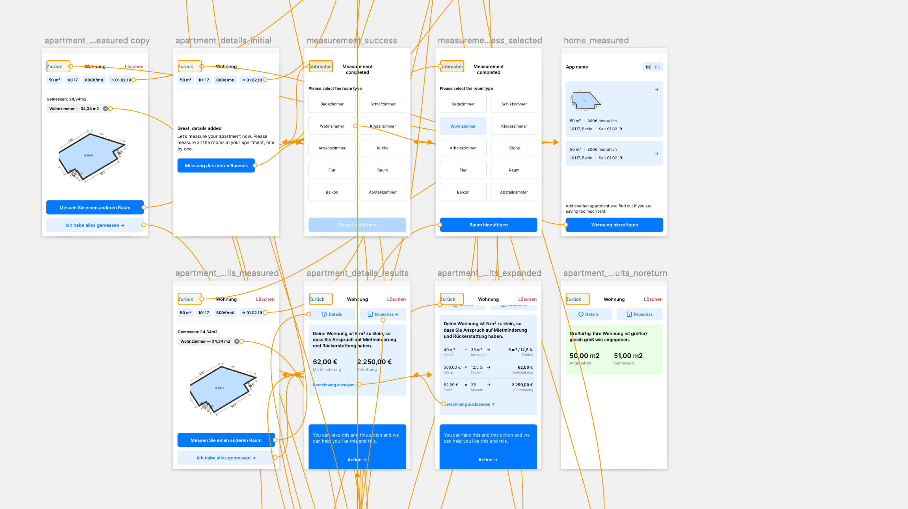

Roometric — iOS, Android, Public website UI Design, UX Design, Communication Design
Based in Berlin, Roometric provides mobile measurement solutions. Their apps generate 3D interior scans with only a smartphone. Scans an be imported into interior planing solutions or used to calculate if the rent is illegally high.
Redesign a complicated Augmented Reality interior scanning process. There was no clear flow and major inconsistencies in the information architecture presented problems for the users — identical elements behaved differently on different screens, and back/cancel hierarchy was not consistent.
Observing users while they used the app and getting informed about the technical limitations of the software helped me define a new user flow. Each revision of the main feature — the scanning process — was tested with 3 users. The rest of the app was structured and designed following regular UI & UX practices. I complimented the new design with a public website.
Solutions
Based on user observations and stakeholder intreviews, a revised information architecture was designed for future reference. This helped in pinpointing and correcting UX problems.
A detailed flow diagram helped me in streamlining the scanning process. Step-by-step wizard guides the users through the process.
Sketch prototype was used for testing.
Users can see their measured appartments or start a new measurement directly from the home screen.
Empty state illustration invites users to start scanning.
Most of the users were not familiar with AR, so it is important to provide them with constructive and timely instructions and feedback. Each measurement step is categorized based on the objects user will be measuring in that step.
Measuring is done by taping the "+" button when it is aligned with a corner of the measured object. Measurements are immediately calculated and overlayed in AR, providing reassurance that the scan is going well.
Each step has measuring instructions on top.
Potential rent decrease and payback are shown if the user pays too much rent. The app compares the rent to the law defined limit for that area and housing size.
Appartment details are shown in a contextual menu.
User is presented with a full 3D model — with floor and wall area surface calculated automatically.
Users can export a scan with all the measurements and elements or upload it to 3rd party services — easily sharing their appartment plan with interior designers.
A minimal amount of colors and elements puts the focus on the AR experience. Since the app was developed in Unity, Inter typeface — carefully crafted & designed for screens — was used accross both platform.
The new visual language was applied to a simple landing page as well— communicating the features and advantages of Roometric to private and business customers.
Roometric domestic market is Germany.
—